0 整体参数
参数：速度、尺寸、容量/成本、耐用性/寿命
1 机械硬盘（Hard Disk Drive, HDD）
大牌：西数，东芝，希捷
1.1 物理结构
使用磁介质储存数据

硬盘的物理结构一般由磁头与盘片、电动机、主控芯片与排线等部件组成；当主电动机带动盘片旋转时，副电动机带动一组（磁头）到相对应的盘片上并确定读取正面还是反面的碟面，磁头悬浮在碟面上画出一个与盘片同心的圆形轨道（磁轨或称柱面），这时由磁头的磁感线感应碟面上的磁性与使用硬盘厂商指定的读取时间或数据间隔定位扇区，从而得到该扇区的数据内容；
- 磁道
当磁盘旋转时，磁头若保持在一个位置上，则每个磁头都会在磁盘表面划出一个圆形轨迹，这些圆形轨迹就叫做磁道（Track）。资料存储手段从LMR进展到PMR这中又有CMR、SMR等技术。
- 柱面
在有多个盘片构成的盘组中，由不同盘片的面，但处于同一半径圆的多个磁道组成的一个圆柱面（Cylinder）。
- 扇区
磁盘上的每个磁道被等分为若干个弧段，这些弧段便是硬盘的扇区（Sector）。硬盘的第一个扇区，叫做引导扇区。
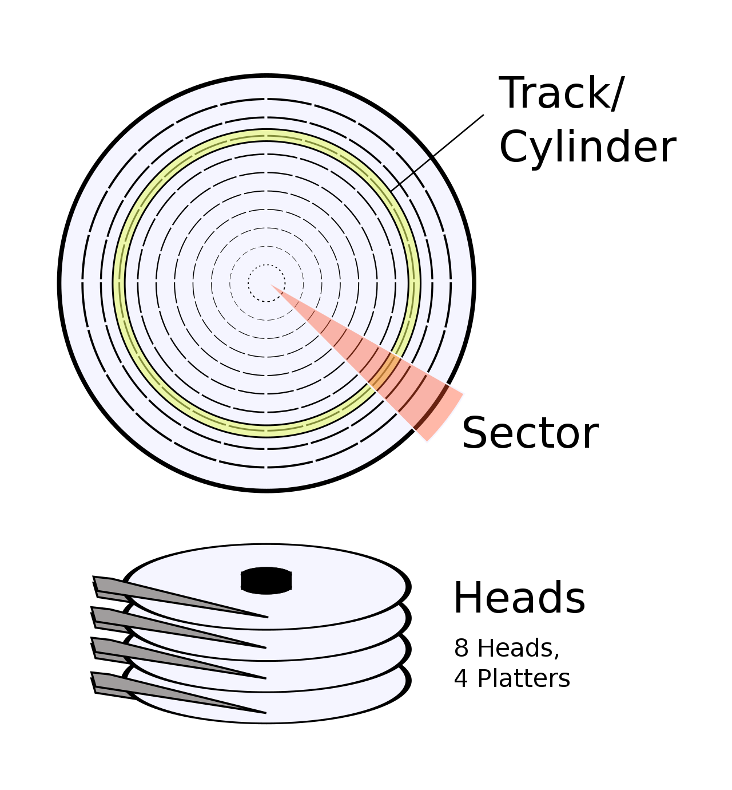
磁道（Track），柱面（Cylinder），扇区（Sector），磁头（Heads），盘片（Platters）
每个盘片都有两面，因此也会相对应每盘片有2个磁头。
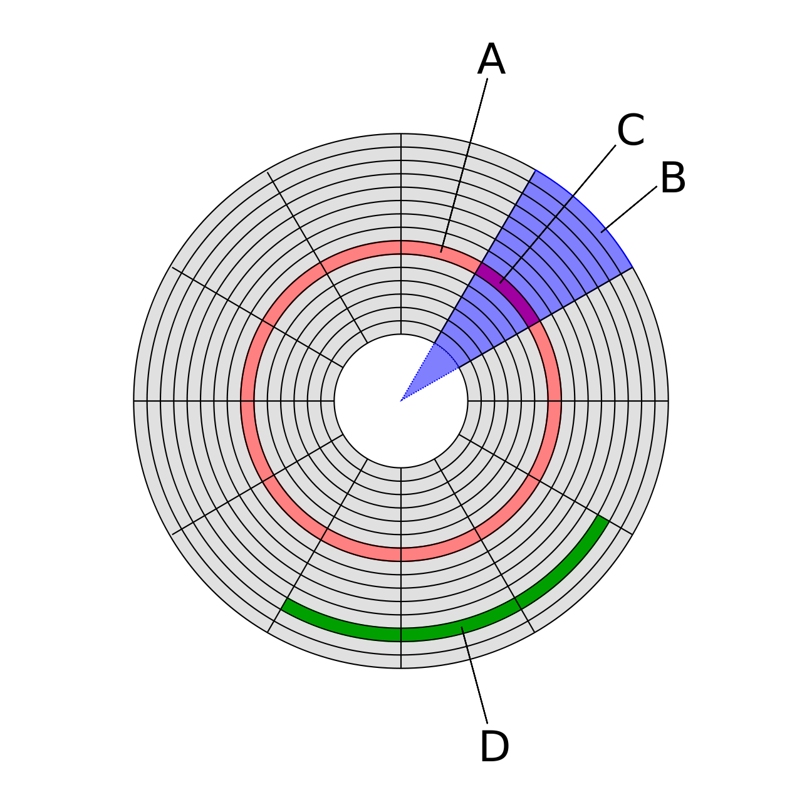
A：磁道
B：扇面
C：扇区
D：簇（扇区组）
1.2 参数
*尺寸 *2.5寸（笔记本、移动机械硬盘）和3.5寸（主机）。
转速 7200rpm或5400rpm，显然转速越快读取速度越快。
传输速度
5400rpm硬盘平均读写速度大致在60-90MB/s这个区间。
7200rpm硬盘大致在130-250MB/s区间。
垂直式（CMR）与叠瓦式（SMR）：推荐CMR。SMR建议用作只读盘而不修改。
将一个磁道拿出来并近似为平面。
古早的机械硬盘的磁性颗粒是水平排列的（因为写探头的大小问题）。

后来，写探头变小了，因此可以将磁性颗粒竖着排放，这种排列方式被称为PMR：
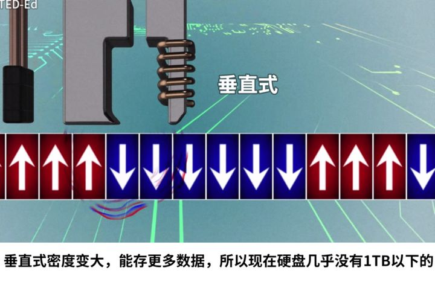
为了提高存储的密度，厂家开发出了更加丧心病狂的SMR（也属于PMR），即将磁性颗粒部分相重叠：
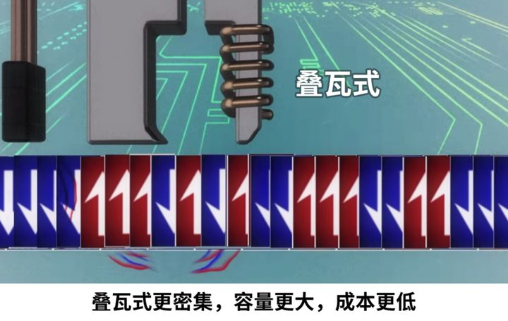
原来的传统PMR技术就被称为C(conventional)MR。CMR磁道间有间隔，而SMR叠在了一起，因此没有间隔。
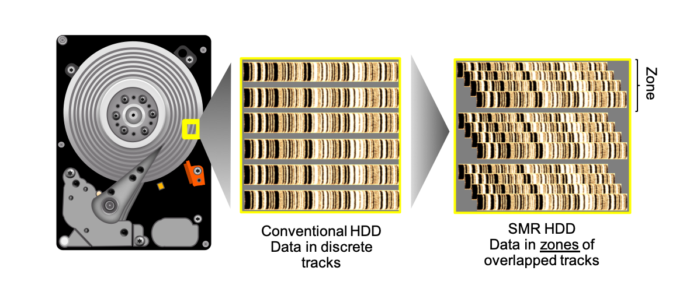
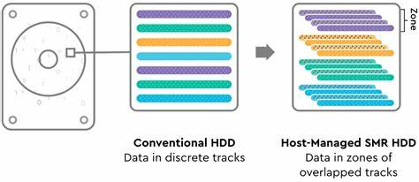
读取探头比写入探头要小。CMR的读写很好理解，写入和读取不同的磁道完全是相互独立的。而对于SMR来说，后写入的数据会覆盖较前写入的数据的磁道的下半部分，但是由于读取探头较小，因此可以正常读取数据（读取之前写入数据的磁道的上半部分）。但是如果要修改之前写入过的数据，就需要缓存后写入的数据，写入新数据，再一层一层写入后面的数据。这就是为什么SMR的缓存较大且最好写入后就不要再修改的原因。
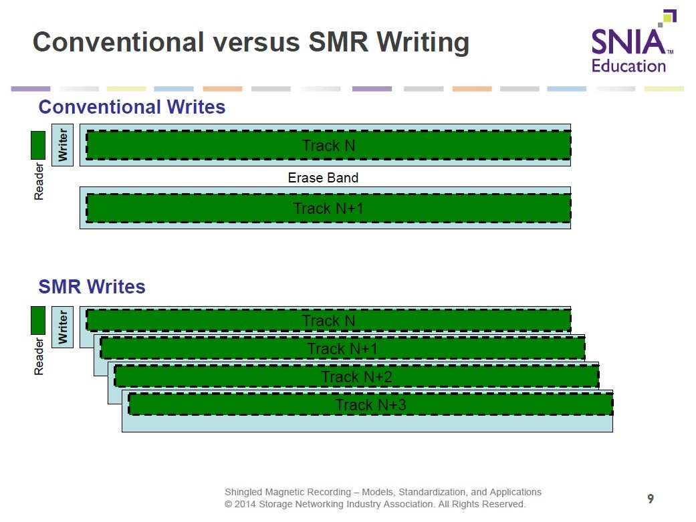
空气/氦气
目前空气硬盘最多可以容纳 6 片盘片（西部数据 HC330，1.67TB x 6 = 10TB），氦气硬盘依靠氦气的低密度降低磁盘间距和盘片厚度，盘体内最多可以容纳 9 片盘片（2.0TB x 9 = 18TB），同时常常兼具功耗低、噪音小等附带属性，但是因为氦气需要被完全密封在盘体内，硬盘的死法又多了一个氦气漏气的类型。
接口 SATA, USB(移动硬盘)
1.3 扇区管理
MBR GBT
主引导记录（Master Boot Record，缩写：MBR），又叫做主引导扇区，是电脑引导后访问硬盘时所必须要读取的首个扇区，主引导扇区记录着硬盘本身的相关消息以及硬盘各个分割的大小及位置消息，是资料消息的重要入口。如果它受到破坏，硬盘上的基本数据结构消息将会丢失，需要用繁琐的方式试探性的重建数据结构消息后才可能重新访问原先的资料，对于那些扇区为512位组的磁盘，MBR分割表不支持容量大于2.2TB（2.2×1012字节）的扇区。
全局唯一标识分区表（GUID Partition Table，GPT）是一个实体硬盘的分区表的结构布局的标准。它是可扩展固件接口（EFI）标准的一部分。GPT分配64bits给逻辑块地址，因而使得最大分区大小为$2^{64}-1$个扇区。对于每个扇区大小为512字节的磁盘，相当于9.4ZB（9,444,732,965,739,290,426,880字节或 18,446,744,073,709,551,615（$2^{64}-1$）个扇区x 512（$2^9$）字节每扇区）。
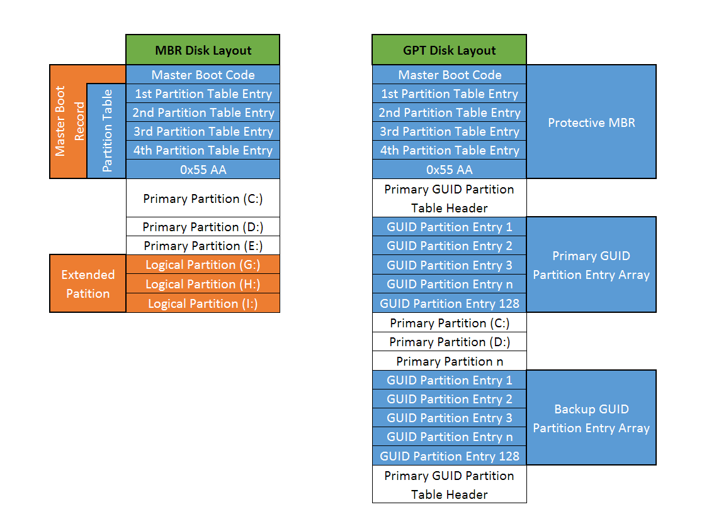
1.4 历史
来源链接：https://zhuanlan.zhihu.com/p/74275200
1973年Winchester技术硬盘，确定了硬盘的基本架构，利用几个同轴涂上磁性材料的金属圆盘和可移动磁头密封在一个盒子里，通过圆盘旋转读出信号的改变。
1979年IBM研发了薄膜磁头技术，进一步减小硬盘体积。
1981年IBM研发了MR（Magnerto Resistive磁阻）技术，将存储密度从200Mbpsi提高了数十倍，为大容量硬盘的诞生奠定了基础。
1991年，经过了10年推出了MR技术3.5英寸的1GB硬盘。3.5寸也成为了现在计算机硬盘的标准规格。
1997年，GMR巨磁阻效应磁头诞生，存储密度比MR技术高了8倍多，但是好景不长也基本达到了瓶颈。
2005年，垂直写入技术（Perpendicular Recording，PMR）的大量使用使得在2007年日立推出了第一款突破TB级容量的硬盘。进入1TB时代。（单盘1TB）
2010年后SSD走上舞台。
2012年才有了第一款4TB的硬盘。
受限于机械硬盘的瓶颈，2012-2017年机械硬盘技术发展基本处于停滞状态，价格对于今天而言略降。
2017年推出了叠瓦式磁记录(Shingled Magneting Recording，SMR)技术，允许磁轨互相重叠，像屋顶的瓦片。这种方式使得单盘容量能够达到2TB。但是SMR硬盘的缺点是比较致命的，对于一些存有数据的磁轨，如果写入，针对的是磁轨的全部宽度，而磁轨的重叠会导致临近的磁轨被重写。
1.5 杂项
护理
不要拆开！不要拆开！不要拆开！机械硬盘拆开直接报废。
SMR硬盘最好不要频繁修改数据。
2 固态硬盘（Solid-state Drive,SSD）
牌子有很多
来源：https://www.zhihu.com/question/355642710/answer/897977012
第一梯队（自产自销）：
三星，西数/闪迪，东芝，英特尔/镁光。
其中三星最贵也最好，西数性价比略高，东芝性能一般，英特尔便宜的真便宜，贵的真™贵。
第二梯队（原厂颗粒）：
浦科特，金士顿。
浦科特近年来都没出几个好的固态，性价比不算高。金士顿用的是买原厂颗粒自己封装的，颗粒稳定性不如第一梯队。
第三梯队（白片）：
各种品牌定制，联想，宏碁，影驰，七彩虹等等。这些一般都是拿原厂检测不合格但能用的白片，可靠性一般，性能还行。
第四梯队（黑片）：
光威悍将，以及各种便宜到不可思议的固态，多是国产品牌。黑片的可靠性不用多说了吧，说不准哪天突然就boom了。
以下部分数据来源：https://www.zhihu.com/question/19926569/answer/547791508
https://zh.wikipedia.org/wiki/固态硬盘
1.1 物理结构

用非易失性存储器（主要以闪存中的 NAND Flash）作为永久性存储设备。
固态硬盘由主控、缓存、闪存（NAND Flash）组成。
主控 主控是SSD非常重要的一部分，相当于电脑的CPU，是决定固态性能优劣的核心。由于技术门槛较高，所以主控品牌比较少，目前头部品牌有马牌（Marvell）、三星、英特尔（Intel），另外还有瑞昱、东芝（铠侠）、慧荣、群联等表现不错。
闪存 NAND Flash分为四种：SLC, MLC, TLC, QLC。分别代表一个Cell能存储1bit、2bit、3bit和4bit的数据。能储存的数据量从QLC至SLC依次递增。
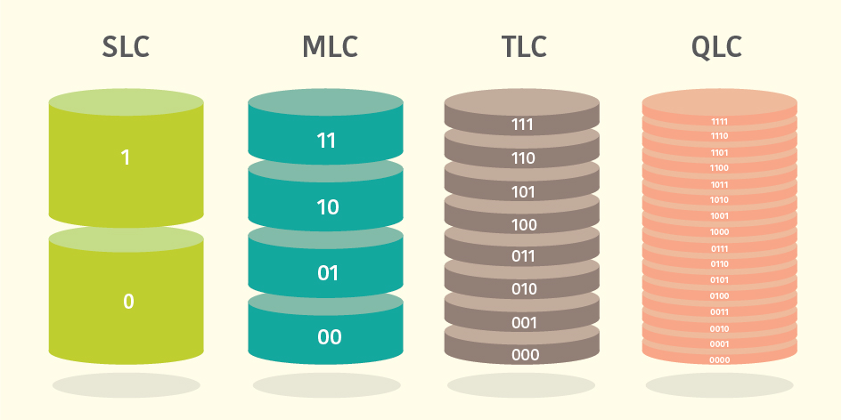
读取速度SLC依次递减至QLC，价格同理。
目前主流是TLC，QLC也在逐渐占领市场，SLC和MLC基本只能在高端产品中见到。
1.2 接口/外形
根据物理外形可以分为2.5英寸、M.2和AIC（独立显卡那样的插卡式）三类。
根据电气标准可以分为SATA和PCIe两类。
根据数据协议可以分为AHCI和NVMe两类。
SSD的类型：
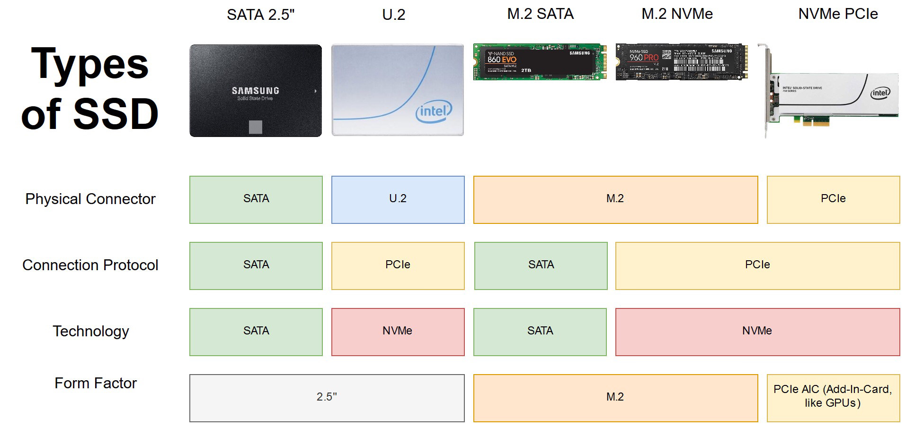
PCIe接口和SATA接口的区别：
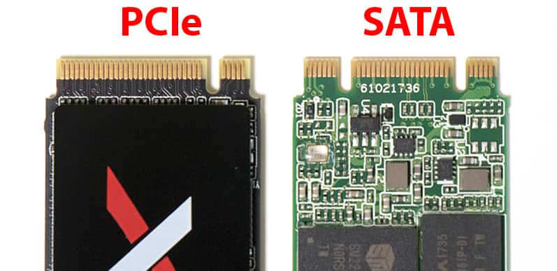
m.2的长度：
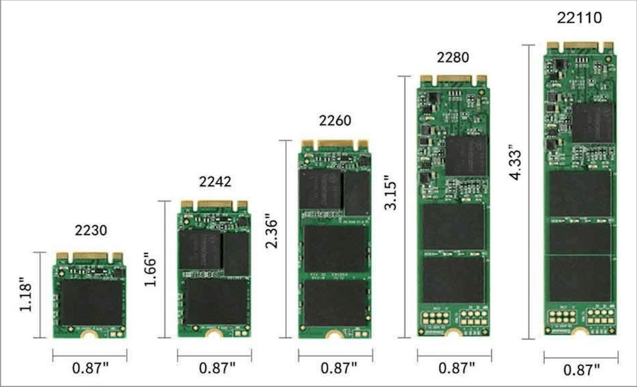
PCIe4.0与PCIe3.0 PCIe 4.0的传输速率定义为16GT/s，比3.0翻番。但PCIe 4.0技术较新，价格昂贵，因此不一定适合需求。
1.3 参数
成本 比机械硬盘昂贵。
速度 sata协议的硬盘接口：m.2接口，sata3接口，PCI-E x2接口。速度在500-700MB/SNVME协议的硬盘接口：m.2接口，PCIE-E x4接口。3000MB/S以上。
与机械硬盘相比，固态硬盘拥有更快的读写速度（无论是顺序读写还是随机读写）、更高的IOPS（每秒响应次数）以及更低的响应延迟（类比机械硬盘的寻道时间）。
寿命 由于浮栅MOSFET中本征电场的存在，随着时间流逝产生的电荷泄漏，会逐渐导致NAND闪存中的数据出错甚至无法读取。由于陷阱辅助隧穿（Trap-assisted tunneling (TAT)）效应，随着擦写次数（编程/擦除周期数，Program/Erase Cycle (P/E Cycle)）的增加，氧化物绝缘层逐渐磨损，NAND闪存的可靠性会逐渐降低（数据保持时间缩短）。升高温度也会使数据保持时间缩短。
一些特性 由于没有像机械硬盘那样的运动部件，固态硬盘对振动/震动没那么敏感，较为耐摔，运行时发出的噪音几乎不可闻。但是，固态硬盘在发生故障或因误操作删除、覆盖数据时基本无法恢复。
U盘
结构类似固态硬盘。
同样使用NAND Flash作为储存，同样有主控进行写入。最大差别是便携性、容量和接口。
各种接口在下篇文章有详解。
SD/TF卡
同样使用NAND作为储存
链接：https://zhuanlan.zhihu.com/p/66018996
外观区分：
SD卡体积为24mm×32mm×2.1mm；
TF卡体积为15mm×11mm×1mm！
名称区分：
SD卡即Secure Digital Memory Card，中文翻译为安全数码卡。
TF卡即T-Flash又称MicroSD，是一种记忆卡。后改称为TransFlash；而重新命名为MicroSD的原因是因为被SD协会（SDA）采立。另一些被SDA采立的记忆卡包括miniSD和SD卡。
用途区分：
SD卡被广泛地于便携式装置上使用，例如数码相机、个人数码助理(PDA)和多媒体播放器等。
TF卡主要于手机使用，但因它拥有体积极小的优点，随着不断提升的容量，它慢慢开始于GPS设备、便携式音乐播放器和一些快闪存储器盘中使用。
SD卡级别：
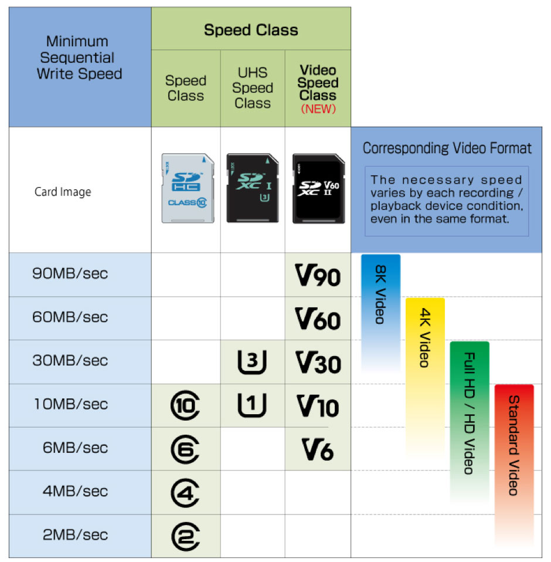